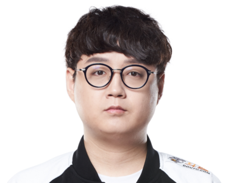

Bot och Support
- "Uzi" - Botlaner
- "Mata" - Support
Jian "Uzi" Zi-Hao (Bot)
Extremt begåvad spelare som ofta kallas den bästa bot lanern. Lag brukar ofta byggas runt han och presterar väldigt bra. Tyvärr fick han sluta pga hälsoproblem.
Cho "Mata" Se-Hyeong (Support)
Känd som den bästa supporten. Han följer ofta efter junglern och flankar andra lanes istället för att hjälpa sin bot laner, som supports traditionellt ska göra. Detta gav hans lag stora fördelar som är därför han är känd som den bäste supporten.